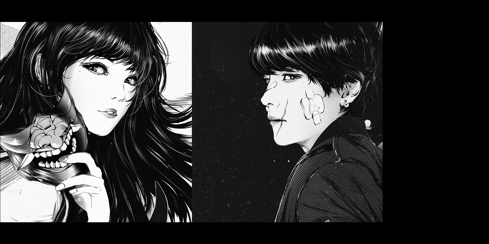
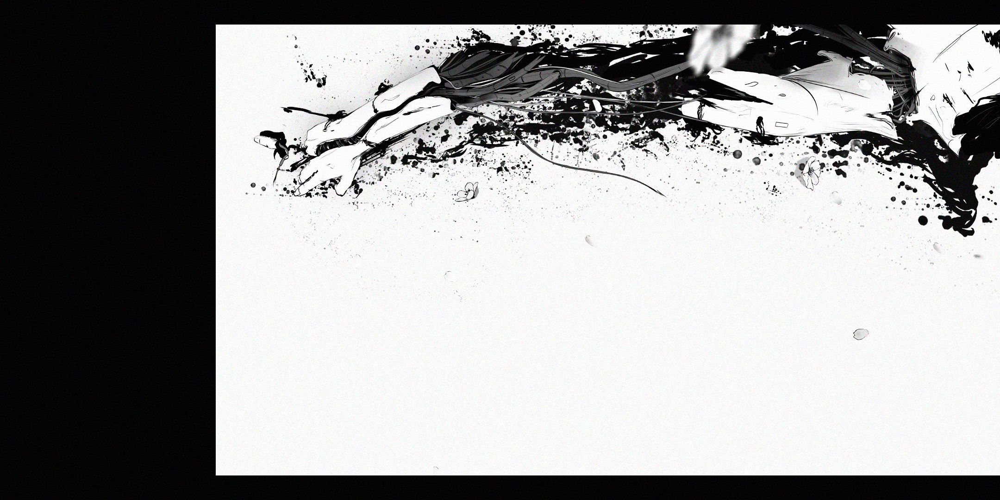
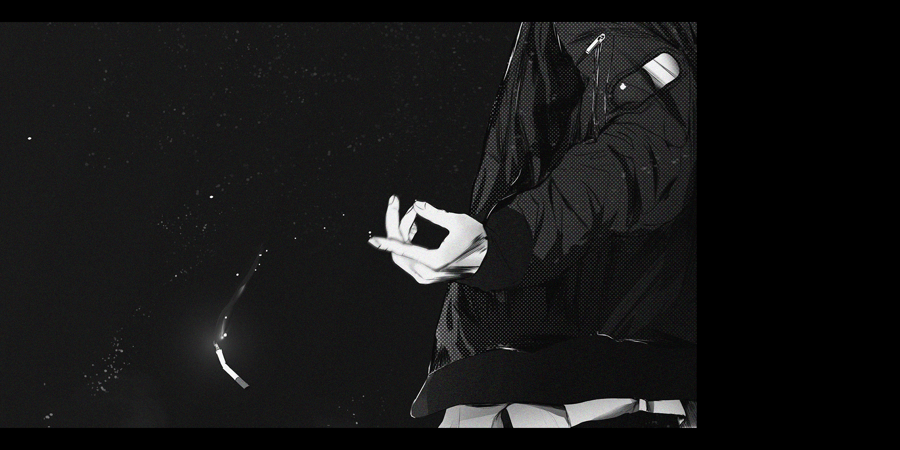
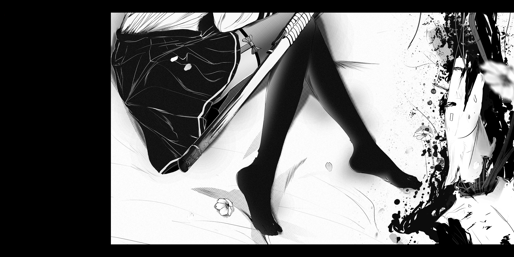
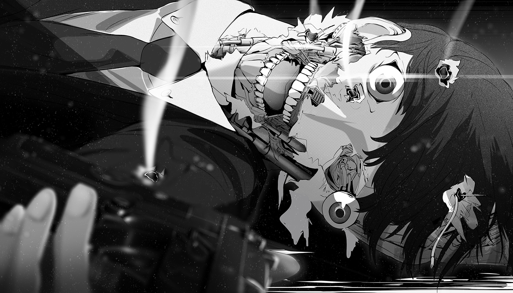
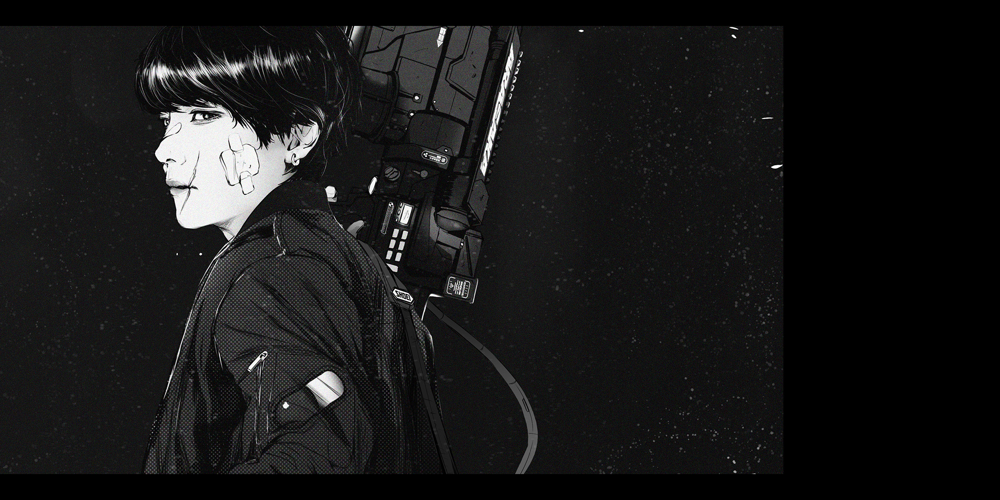
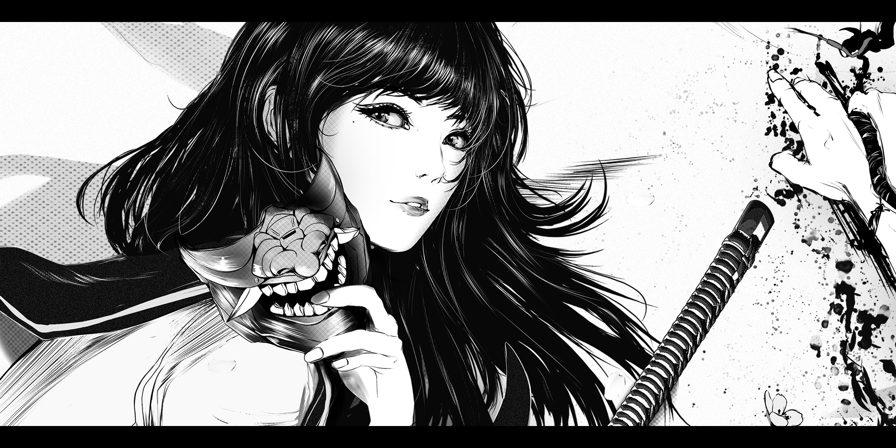
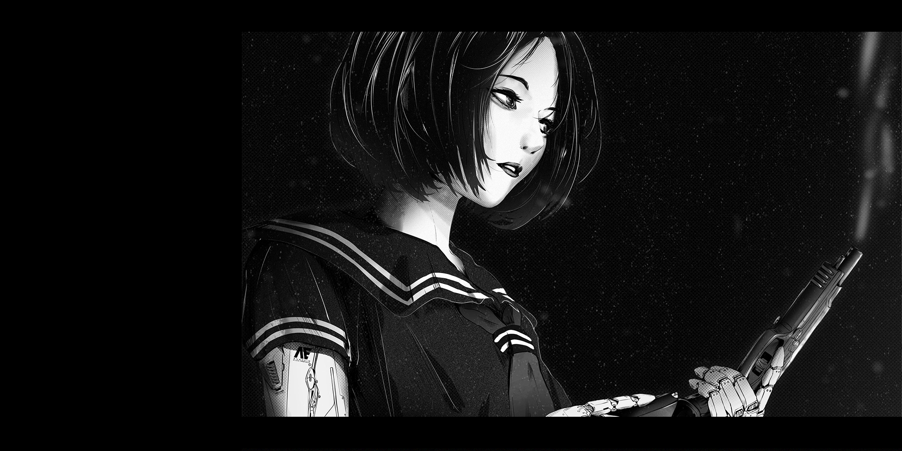
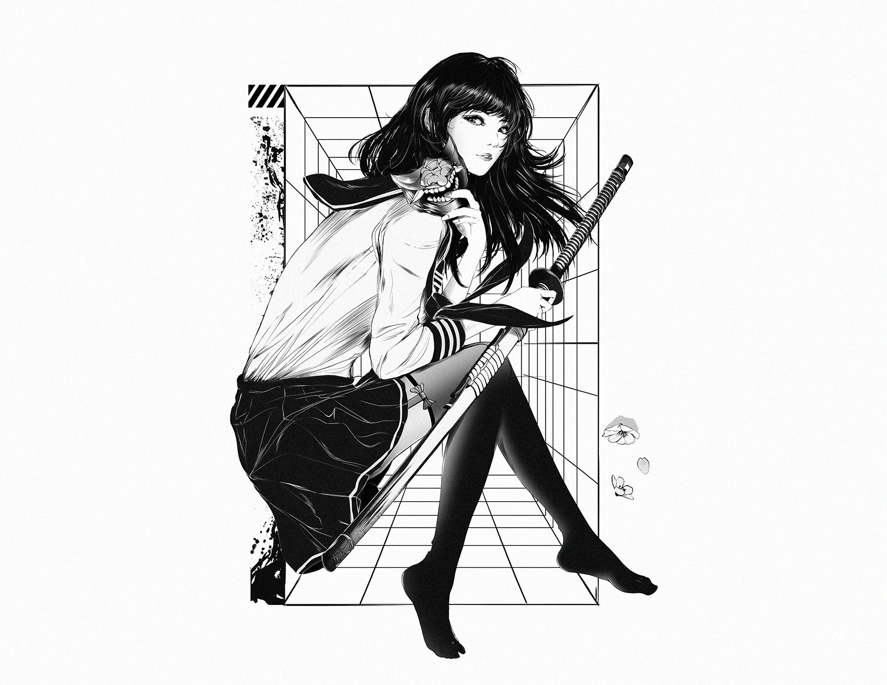
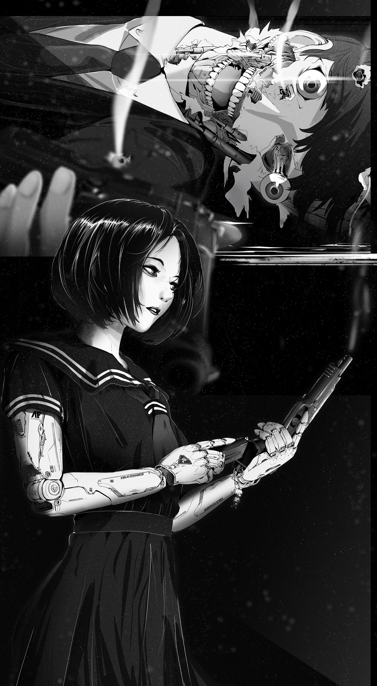

人間レッスン - "EXTRACURRICULAR"
“So stubborn, don’t talk back, know your place” - these are common retorts found in all East Asian countries. East Asian cultures are extremely patriarchal, hierarchical - those who are older or hold higher status than you can act upon you with impunity. With ever increasing income inequality, decreasing opportunities for social mobility, and destruction of privacy in a hyper connected world, the cyberpunk dystopias of AKIRA and Ghost in the Shell become closer to reality.


EXTRACURRICULAR explores the fashion and character designs of young asian students in a cyberpunk dystopia and draws upon the seething undercurrent of resentment and disenfranchisement of young adults around the world. They depict a bleak future where violence is the new norm.

Illustrated in the style of Japanese manga and composed in long scroll format harkening to Sumi-E paintings, EXTRACURRICULAR portrays putting edge technology juxtaposed with body horror and dramatic silhouettes and cinematic contrasts in blacks and whites inspired by noir films.





EXTRACURRICULAR in particular focuses the iconic imagery of school uniforms in the designs of characters in depictions of dystopias - particularly Asian depictions of cyberpunk dystopias. Drawing heavy influence from Japanese manga and animated worlds like Shirow Masamune’s seminal classic Ghost In The Shell and specifically - Otomo and Izo Hashimoto’s AKIRA, I sought to design characters that displayed the subtle and not so subtle ways Asian school children expressed hints of personality through their fashion.

